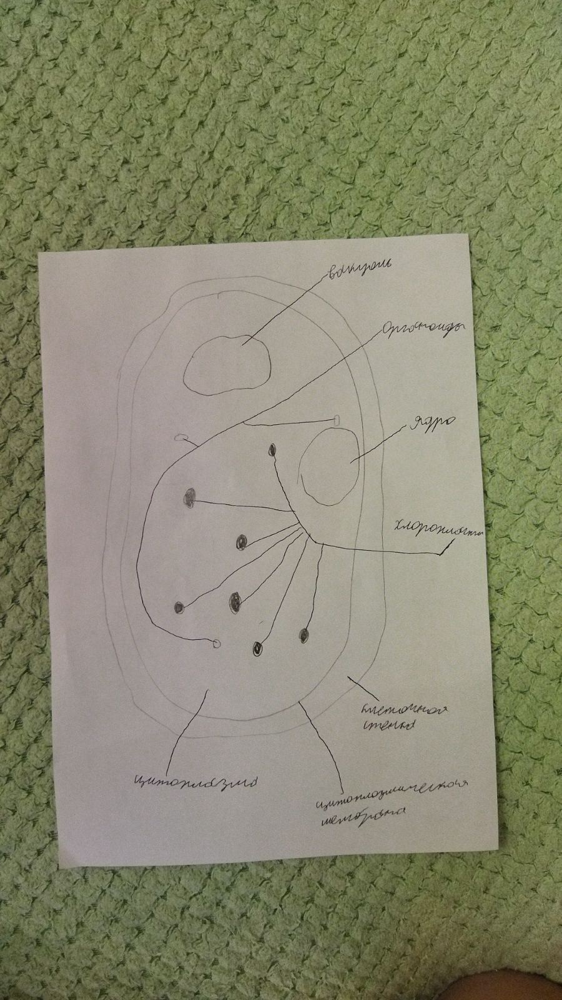

ответ на вопрос № 1
Органоиды, цитоплазму, вакуоли, ядро и клеточная стенка
ответ на вопрос № 2
Органоиды это маленькие тельца которые находятся внутри клетки. Органоиды помогают переносить вещества из одной части клетки в другую
ответ на вопрос № 3
тем, что пластиды ораньжегого цвета
ответ на вопрос № 4
Ядро предстовляет собой дневник в котором записываются все привычки растения и подробности о нём. Ядро выполняет функцию подробности о растении
ответ на вопрос № 5
Потому что в одних сладкий клеточный сок, а в других кислый клеточный сок
Лабороторная работа № 3

мои микропрепораты это: пинцет, пипетка и предметное стекло

Мы видим под микроскопом множество клеток лука, и закрашивать в тетради надо так

Лабороторная работа № 4
Клетки элодеи состоят из цитоплазмы, хлоропласт, цитоплазмической мембраны, ядра, вакуоли, клеточной стенки и органоидов